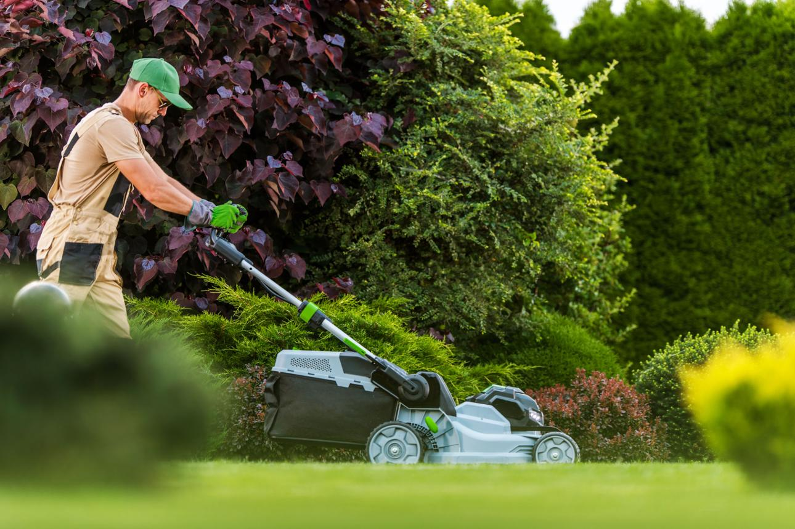
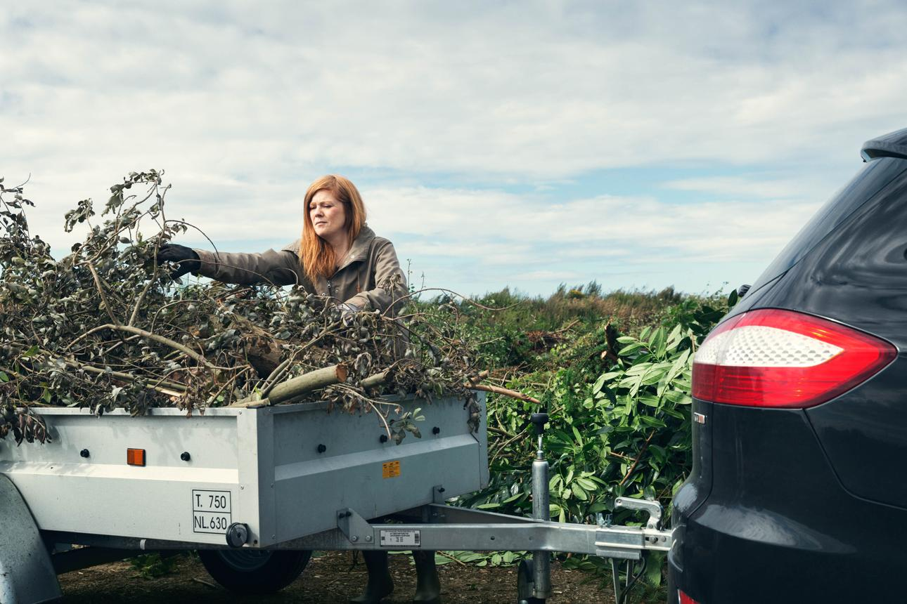
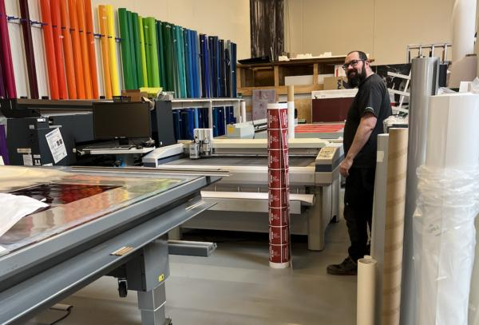

Græsslåning
Fast eller enkelt græsslåning, så haven altid ser pæn ud.

Fast eller enkelt græsslåning, så haven altid ser pæn ud.
Professionel klipning af hække og buske.
Fliser, gangstier, terrasser og mindre belægningsopgaver.

Bortkørsel af haveaffald, byggeaffald og almindelig oprydning.

Skilte, print, folier og grafisk arbejde til private og erhverv.
Træk i midten og se forskellen.


Beskriv opgaven, så vender Lars tilbage med et tilbud.